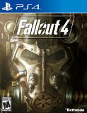
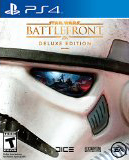

Fallout 4

200 years after a nuclear war. Fallout 4 is set in a post-apocalyptic Boston, in wich the player character emerges from an underground bunker known as Vault. Gameplay will be similar to Fallout 3. Completing quest and aquiring expirience will level up the character, allowing new abilities.
FIFA 16
FIFA 16 is an assocition fotball simulation video game published by EA Sports for Microsoft Windows, Playstation 3, Playstation 4, Xbox 360, Xbox One, Android and iOS. The game is the first in the FIFA series to include female players.
Star Wars BattleFront

Immense yourself in the ultimate Star Wars video game experience with Star Wars Battlefront. Available November 17, 2015 for Playstation 4, Xbox One and PC.